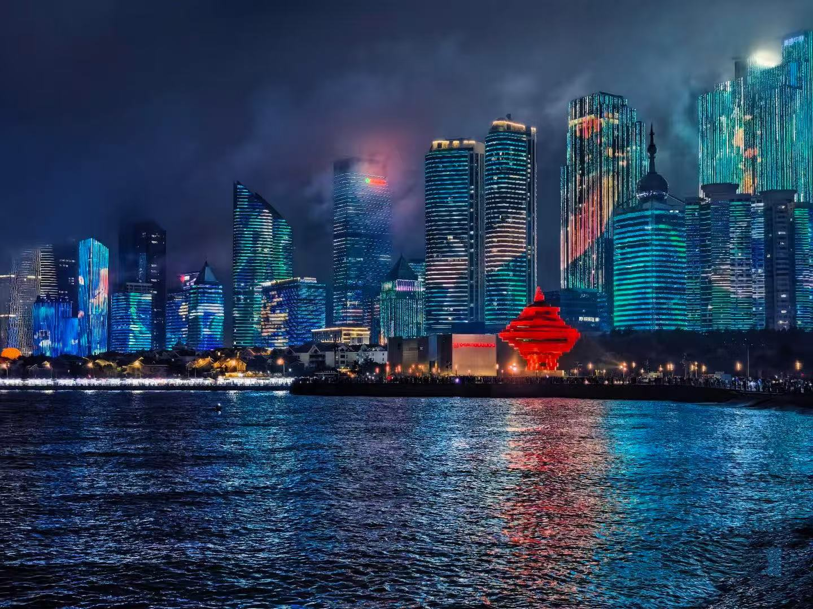

Liwen Tan · SSCI 591 · Web & Mobile GIS · Fall 2026
Hi, my name is Liwen. I am a graduate student at USC, and my major is Geographic Information Science and Technology. I am interested in GIS, maps, and spatial data, so I created this web page to introduce my hometown, Qingdao, and share some of the places that represent the city.
Qingdao is my hometown, which is a coastal city in Shandong Province in eastern China. Qingdao is located along the Yellow Sea and it is well known for its beaches, seafood, and beautiful coastal sceneries. The city has an interesting mix of modern buildings and older European-style architecture, especially for areas close to the coast.
Qingdao has many famous places to visit, suich as Zhanqiao Pier, Badaguan Scenic Area, May Fourth Square, and Laoshan Mountain. The city is also famous for Tsingtao Beer, which originated in Qingdao and it has already become one of the city's most recognizable products.
What I like most about Qingdao is the combination of the ocean, mountains, urban areas, and suitable for human living climate. The city has both natural scenery and modern city life. Since I grew up in Qingdao, it is also a very special place for me and holds many of my childhood memories.
Qingdao has many different attractions, from historic architecture and coastal landmarks to modern public spaces and natural landscapes. Here four places show different sides of the city.
The attraction table is currently visible.
| Attraction | Introduction | Photo |
|---|---|---|
| Zhanqiao Pier | Zhanqiao Pier is one of the most recognizable landmarks in Qingdao. It is located in the old downtown area into Qingdao Bay and offers views of the coastline and city skyline. The pier has a long history and it connected with the development of modern Qingdao. | |
| Badaguan Scenic Area | Badaguan is a historic neighborhood near the coast. It is known for its tree-lined streets and buildings with different European architectural styles. The area is popular for walking, photography, and enjoying the quieter side of Qingdao. | |
| May Fourth Square | May Fourth Square is a large public square in the south part of Qingdao. One of its most famous landmarks is the red sculpture called "The Wind of May." The square is located next to the coast and is surrounded by modern buildings, which shows the combination of modern city and natural scenery. |
 |
| Laoshan Mountain | Laoshan Mountain is located east of the main urban area of Qingdao and combines mountain landscapes with views of the Yellow Sea. It is known for its hiking routes, natural scenery, and Taoist culture. |
Use the interactive map below to move between Qingdao and USC in Los Angeles.
Choose a location.